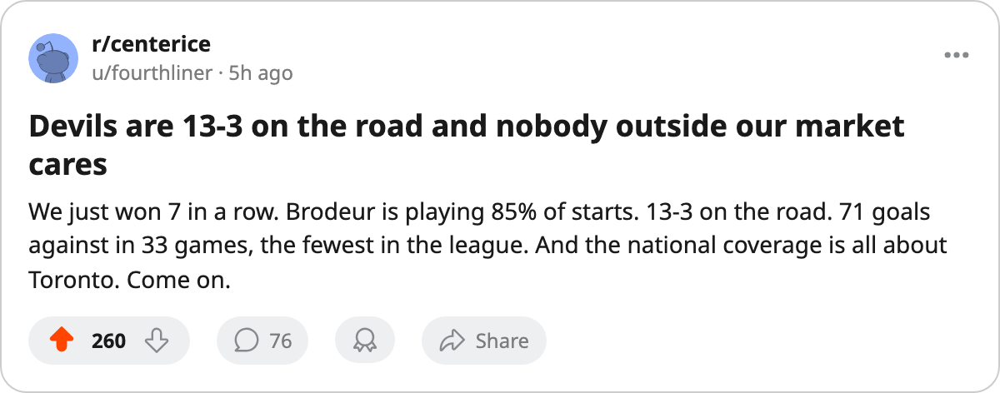

NJ
NJNumbers Game: New Jersey Has Won 7 Straight and Holds 51 Points on Just 33 Games
The Devils sat 43 points on 2005-12-20. They are at 51 now. Martin Brodeur has 28 starts in 33 games and Boston is next.
 Ray CallumSenior correspondent · Home Ice Network
Ray CallumSenior correspondent · Home Ice Network
When this desk last wrote about New Jersey, on 2005-12-20, the Devils were 29 games deep with 43 points and a 3-game win streak. Four games later: 33 games, 51 points, 7 straight wins. That is 8 points added in 4 nights against a schedule that included a trip to New York and a trip to Washington.
The Devils have allowed 17 goals in their last 10. Their 71 GA across 33 games is the fewest in the league.
The road record nobody talks about
New Jersey is 13-3 on the road, a .813 winning percentage away from home, behind only Toronto's 13-2.  Martin Brodeur95 has played 28 of 33 starts (85 percent) and the Devils have lost only 3 times at other teams' buildings all season.
Martin Brodeur95 has played 28 of 33 starts (85 percent) and the Devils have lost only 3 times at other teams' buildings all season.
The Devils visit Boston on 2005-12-30, a first meeting between these clubs this season. The Bruins are 18-10-4, 46 points, 5th in the East, and on a 1-game losing streak. Boston's home record is 8-10, the worst home mark among the top five in the conference.  Andrew Raycroft78 has 25 starts and
Andrew Raycroft78 has 25 starts and  Steve Shields77 10 for the Bruins.
Steve Shields77 10 for the Bruins.
What it costs to carry the workload
Brodeur's 85 percent share is the highest in the East among goaltenders with more than 20 starts. The Devils have 19 injury spells and 56 days lost this season, the 2nd-fewest in the league behind Tampa Bay's 45. Brodeur, Friesen, Kubina and others have all missed time without any one man missing a long stretch.
The remaining 49-game slate has 13 road games in the next 6 weeks, and the next two months will test whether the 33-game, 51-point pace holds.
